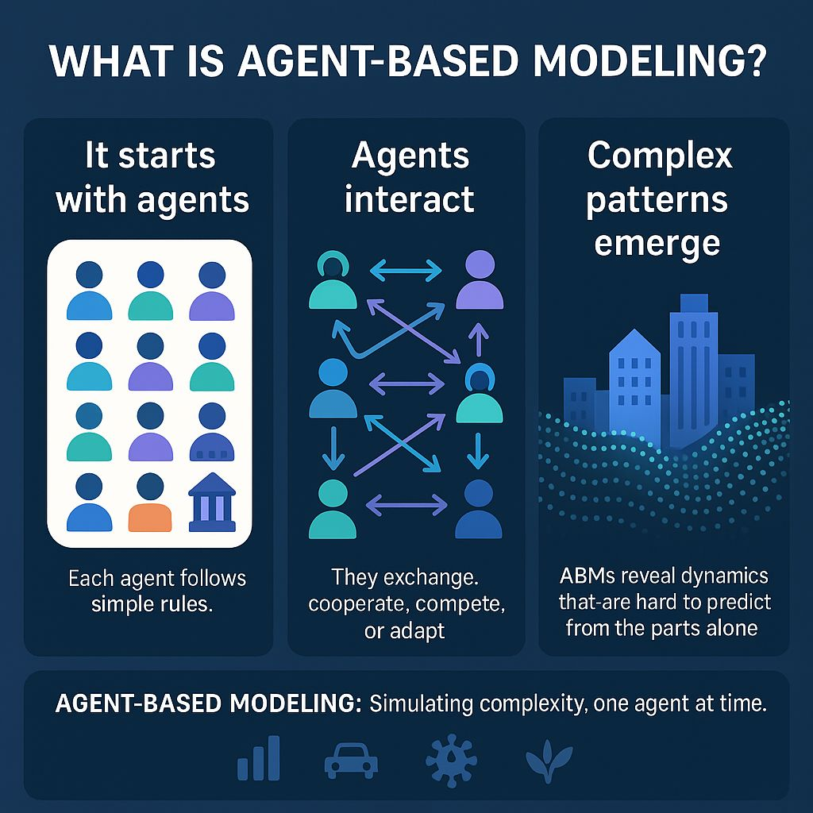

Module 7 • How AI can Effect your Security Enviroment
Page 1 of 6
Welcome
Welcome to Module Seven of the Cybersecurity Awareness Training course.
In this module you'll learn the importance of automation and orchestration related to secure operations. If you are given a scenario you will be able to modify enterprise capabilities to enhance security.
You will also be able to implement and maintain identity and access management.
You will learn the positives and negetives of how AI can and will effect how you work and what you look for working in Cyber Security from someone who has worked in the feild himself.
Learning Objective
Understand why cybersecurity matters and recognize the role each person plays in protecting information and systems.
Cybersecurity Awareness Training
Module 1 • Security Fundamentals
Page 2 of 6
Explain the importance of automation and orchestration related to secure operations
Use Cases of Automation and Scripting
Automation and scripting support a wide range of security and IT operations tasks. User provisioning automates the creation and configuration of user accounts, ensuring new employees get consistent access without manual setup errors. Resource provisioning automates the deployment of infrastructure, such as servers or cloud resources, according to predefined, secure configurations. Guard rails are automated controls that prevent users or systems from taking risky actions, such as blocking a misconfigured deployment before it goes live. Security groups can be automatically applied to control access to resources based on defined rules rather than manual assignment. Ticket creation can be automated so that alerts or detected issues automatically generate a record for tracking, reducing the chance something gets missed. Escalation processes can automatically route unresolved issues to the appropriate team or level of authority based on severity or time elapsed. Enabling and disabling services and access can be automated, such as instantly revoking access when an employee is offboarded. Continuous integration and testing automates the process of testing code changes as they are made, catching security issues earlier in development. Integrations and application programming interfaces (APIs) allow different security tools to communicate and share data automatically, enabling coordinated responses across systems.
Benefits
Automation offers several advantages over manual processes. Efficiency and time savings come from eliminating repetitive manual tasks, freeing staff to focus on more complex work. Enforcing baselines ensures configurations stay consistent across systems without relying on manual checks. Standard infrastructure configurations reduce the chance of human error introducing misconfigurations. Scaling in a secure manner allows an organization to grow its infrastructure without a proportional increase in security risk or manual oversight. Employee retention can improve when automation removes repetitive, low-value tasks that contribute to burnout. Reaction time improves because automated systems can respond to threats far faster than a human could. Automation also acts as a workforce multiplier, allowing a smaller security team to accomplish what would otherwise require significantly more staff.
Other Considerations
Automation isn't without tradeoffs. Complexity increases as automated systems and scripts are added, which can make troubleshooting more difficult when something goes wrong. Cost includes the investment needed to build, license, and maintain automation tools and scripts. A single point of failure can be introduced if too much relies on one automated system or script that isn't properly monitored or maintained. Technical debt can accumulate when automation scripts are written quickly without proper documentation or long-term planning, making them harder to maintain later. Ongoing supportability requires that someone continues to understand, maintain, and update automated processes over time, since automation that no one can maintain eventually becomes a liability rather than a benefit. However, agents can help streamline and accelerate these automated processes while reducing some of the manual effort required to maintain them.

Cybersecurity Awareness Training
Module 1 • Security Fundamentals
Page 3 of 6
Given a scenario, use data sources to support an investigation.
Log Data
Different systems generate different types of logs, each providing a different view into the security posture of an environment. Firewall logs record allowed and denied traffic based on firewall rules, useful for identifying blocked attacks or misconfigured rules. Application logs record events within a specific application, such as errors, user actions, or authentication attempts, helping identify issues at the software level. Endpoint logs capture activity on individual devices, such as processes running or files accessed, which can reveal signs of compromise on a specific machine. OS-specific security logs record security-relevant events at the operating system level, such as login attempts, privilege escalations, or policy changes. IPS/IDS logs record traffic and events flagged by intrusion detection and prevention systems, providing detail on potential attacks that were detected or blocked. Network logs capture broader traffic and connection data across the network, useful for tracing how an attacker moved between systems. Metadata refers to data about the data itself, such as timestamps, file sizes, or sender information, which can provide useful context even when the content of a log entry doesn't tell the whole story.
Data Sources
Beyond raw logs, several other data sources support security monitoring and investigation. Vulnerability scans provide point-in-time snapshots of known weaknesses across systems, feeding into the broader vulnerability management process. Automated reports compile data from various tools into a regular, digestible format, saving analysts from manually pulling information every time. Dashboards provide a real-time, visual summary of security data, allowing teams to quickly spot trends or anomalies without digging through raw logs. Packet captures record the actual data traveling across the network at a granular level, which is especially useful during a deep investigation when logs alone don't provide enough detail about what happened.
Cybersecurity Awareness Training
Module 1 • Security Fundamentals
Page 4 of 6
AI and the effects of cybersecurity professionals.
Artifical intelligence is transforming cybersecurity from a human domianted feild to an AI vs AI battleground. It is important to explain the importance of security throughout the life cycle of AI so when your AI fights you understand its attack patterns and how to keep your AI running smoothly.
Tool
Description
Data preparation
The process of gathering, cleaning, and transforming raw data into a clear format.
Model development/selection
The structured, iterative process of defining, building, and refining a mathematical machine to solve a problem.
Model evaluation
Model evaluation is the process of testing an AI or machine-learning model to determine how accurately, reliably, and effectively it performs its intended task.
Deployment
AI deployment is the process of putting an AI model into a real-world environment where it can be used to perform its intended task, such as analyzing data, making predictions, or automating decisions.
Validation
Validation is the process of testing an AI model or system to make sure it performs as expected and produces accurate, reliable results before or during its use.
Data collection
Data collection is the process of gathering relevant information from various sources to use for analysis, training, or decision-making.
Monitoring and maintenance
Use humans to actively watch and act on what the AI outputs and change or update when nessesary.
Feedback and iteration
Feedback and iteration is the process of collecting feedback on an AI system’s performance, identifying areas for improvement, and repeatedly updating or refining the system based on that feedback.
Buisness use case
Align with corporate objectives.
Remember:
AI is a helpful tool not a do all solution for every problem.
Cybersecurity Awareness Training
Module 1 • Security Fundamentals
Page 5 of 6
The downsides to using AI.
Some common downsides of using AI include:
Downside
Why
Bias
AI can produce unfair or biased results if it is trained on biased data.
Privacy concerns
AI systems may process large amounts of personal or sensitive data.
Overreliance/cost
Developing, training, and maintaining AI systems can require significant computing resources and money and people will forget critical thinking skills.
Security Tip
AI is a tool and should only be used when "needed".
Protect your personal data by not posting in to chatgtp.
Critical thinking skills are important.
Think about the buisness benefits of AI and the potential risks.
Check your facts with other sources.
🎉 Module Complete
Cybersecurity Awareness Training
Page 6 of 6
Congratulations!
You have successfully completed
Module 1: Security Fundamentals.
You now understand:
Why cybersecurity is important
Common cyber threats
Ransomware attacks
Types of malware
Security controls
Cryptography and PKI
Change management
Continue Learning
Cybersecurity is constantly evolving. Continue building your knowledge through trusted learning resources.